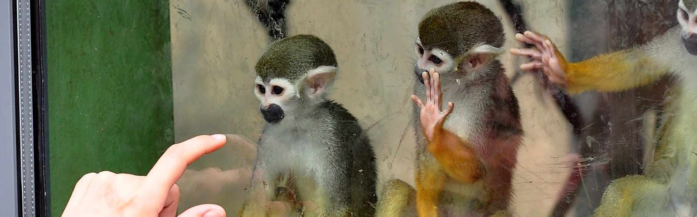

<img src="/good-things.jpg">
It’s the summer holidays. Time for academics to catch up on writing papers, and for undergraduates to get out to enjoy themselves after a year’s study. Except, that is, for those that failed their exams in June. They are indoors, studying for resits. One such student contacted me the other day.
Dear Dr Gabbay”, he very respectfully opened his e-mail, “… I [am] unable to motivate myself. … I have never once finished a year without a re-examination being needed [and] I’m finding it harder each time to carry on.
My question is this: Is there any advice you can give me on how to revise effectively and how to motivate myself and stay positive …?
Good question. Giving advice on motivation is hard, but I’d like to try.
Don’t believe the propaganda that study is easy and fun. It isn’t. Study is often difficult and boring and makes you feel like your head is being crushed by a giant hand.
So let’s consider three reasons that one might do something that is difficult, boring, and hurts:
For love.
By habit.
For the sake of a plan.
Let me go into that in more detail:
Love
Some people love fishing. They sit in the rain for hours for the possibility of dispensing death to a fish. I’d go mad from boredom in five minutes, but I don’t love fishing. Some people love children whom I’d slit my wrists to escape. By the grace of love, parents endure their offspring. May God be praised for this, for otherwise the human race could not have survived. Such is the power of love.
When I was an undergraduate I loved doing maths problems. They were like crosswords to me. I couldn’t get enough of them.
But what’s that you say?
Jamie, thanks for that, but I just don’t like maths — and, by the way, fishing is the best thing I’ve ever done.”
Well, know this: you can teach yourself to love something. More on that below.
Habit
Some men work a boring office job from nine to five every day, simply because that is what people do and that is what they have always done. It is boring, maybe even desperate and soul-destroying. And yet, they continue. It’s a habit.
Do not underestimate the force of habit. When a mountain-climber reaches the top of a mountain he is not motivated. He is in an exhausted stupor and puts one foot in front of the other because he hasn’t the energy to think to stop. So long as our climber can avoid starving or freezing or having a heart attack — in short, so long as he can persist biologically — then he will keep on climbing. Looked at in this way, the hypothetical man in the office is doing something similar, but without the glamour.
For better or for worse, for glory or for empty banality, people perform amazing feats, just out of habit. It works.
A plan
My brother took up martial arts. Within a fortnight he had broken his foot during a class. Now, in any other circumstances he might have screamed and cursed and stopped. But because he had a plan, he did not do this. He picked himself up and continued with the lesson on a broken foot.
Similarly I know a rugby player who broke his finger during a match. He strapped it to another
finger to stop it flapping around too much, and continued playing. I asked him why he did this and
he answered “because we didn’t have a substitute”
. Pain was subordinate to the plan. Indeed, because of the plan
I don’t think he even felt it.
I once saw a professional dancer with an injured knee hobble up to the stage curtains, go onstage, dance like a goddess for an hour (literally, as it happens: she was playing a fertility goddess), exit, and return to hobbling. This happens all the time. The man in the office mentioned above might be doing what is necessary to support his family. Keeping them clothed and fed is his plan.
Pain, boredom, humiliation, and so on, do not necessarily stop you doing something, and they are not even necessarily uncomfortable, if you suffer them willingly for the sake of a plan in which you believe.
Study is hard. Just like bringing up a child, or climbing a mountain, or running around with a broken foot or finger, it requires determination and perseverence. But you can do it if you have love, a habit, or a plan — you might even enjoy it.
So what do you do if you don’t love your subject, aren’t in the habit, and/or don’t have a plan? One obvious suggestion is to switch subjects, but let’s suppose you can’t.
How to love an academic subject
It is common to hear students say things like
Maths is boring!
This is simply not true. Better would be this:
I find maths boring!
But even more accurate would be:
I find maths boring at the moment!
Attitudes change. When I was a child my parents told me to “learn to love it”
. This puzzled
me — how do you learn to love something? — and I also found it threatening — it sounded like I was
being told to change who I am. I did not appreciate that attitudes change, and that failing to see
relevance and interest in a subject is always down to lack of imagination. Every subject is
interesting. You just have to find the hook that makes it interesting to you.
To do that you must know yourself (I cannot do it for you), but here are some suggestions:
Do not approach a course at face value. It exists in the context of a social and historical reality.
Somebody designed it, based on various factors including technical significance and what they
believe constitutes an ‘educated graduate’
. This gets refined to a syllabus. Then, a lecturer
creates course materials based on that syllabus. By then, little of the original context may remain.
It helps to look for the meaning behind the course. For example I taught ‘parsing’
(an important topic in Computer Science) to a hundred students last year. I wonder how many of them
really considered the following questions:
Why is parsing in the course?
Name three places where parsing is important.
How was parsing invented?
Was it a team or some isolated genius?
Why? Where? When? By whom?
Was it used in war? In commerce? In government?
Is parsing used today?
What parts of next year’s syllabus depend on parsing?
How will this material be used in the subsequent courses?
… and so on.
Computer Science enjoys an advantage because it is a very modern subject. If it’s in your course, then it’s there for a very modern reason. You can probably find it on the internet, right now, if you look. Read around a bit; look up the history and applications.
I’ll give you another example. I had trouble studying English in school. I liked a rattling good story as much as anybody else — but I did not get the point of earnest discussion in class about people doing things that never happened in places that do not exist. Then one day, years later, I had a flash of insight. Every person has a model of other people in their mind. The author constructs a model of a certain kind of person in a certain kind of situation, and then runs that model.
The plot provides the momentum, but it’s the model that sets the rules and that’s what we were studying (or in my case failing to understand) in English. For me, literature went from being really boring and confusing to being really interesting and stimulating, in an instant. It took a while, but I had found the hook that worked for me.
Do not expect to ‘be motivated’
by your teachers. Do not blame them for
‘being boring’
. Do not be a victim. Empower yourself. Find out what the course is about.
How to form a habit
I read a self-help book on motivation once. It discussed ‘rewards’
. The idea was to
study for a while, and then give yourself a reward. I find this ineffective; three hours of grinding
slog is not worth one piece of chocolate and a half hour of television.
Study is its own reward, always, even when it hurts (especially when it hurts). The difficult bit is most often getting started. What works for me, is to associate study with an existing habit. For example, every morning I get out of bed and have breakfast. That’s a habit. So if I have to get something done, I get out of bed, study for half-an-hour, and then have breakfast. This is a convenient way to manufacture a new habit; I attach it to an existing routine.
I usually find that once I’ve studied for half-an-hour, I will happily keep going for another fifteen minutes or longer. I also find that after breakfast — so long as there are no interruptions — I can keep going all morning. That early morning start got me in the mood. It’s never as bad as you think, if you can get going.
Do you spend your evenings watching YouTube? That’s a habit. Now get into the habit of studying for an hour and then watching YouTube. You may find yourself getting into the swing of things and studying for an hour and a half.
If you want to get into a new habit, build on an existing one.
Also, prioritise. Studying takes time. By all means go to bed at 3am if this is your habit. However, if there is more studying then there will inevitably be less YouTube. This is good. Studying is a slog but it’s important. Get used to it.
How to have a plan
Something that I have learned from teaching is to distinguish aims and objectives.
An aim is something general that you want to achieve (like the plans mentioned above). Examples of aims include
‘getting rich’
,‘doing well in the exams’
, or‘achieving fame’
.A objective is a more detailed target for doing something.
Aims make lousy objectives. They provide no information as to how to attain them, and worse, they
may serve only to depress you: "I’ve studied for years and I’m still not rich/doing well in the exams/famous! I think I’ll just give up."
Objectives should be simple, systematic, and easy to carry out. For instance, my objectives as an undergraduate included the following:
Do every question on the exercise sheets;
Understand everything the lecturer had said in the last lecture before I went into the next one.
Go back at least five years in the past papers — preferably ten. I usually managed it.
Progress was indisputable: either all the questions were done, or not; either I had studied the lecture notes, or not; either I had gone back five years, or not. This made it easy for me to just keep chipping away at my objectives every time I had a spare hour.
I had faith that if I stuck to my objectives, then any aims would be easier to achieve: good objectives came first. I stand by this today. Pick good objectives, and let the aims and plans come when they’re ready.
Summary
Love; habit; a plan. The difficulty for the undergraduate student is that, quite possibly for the first time, he or she faces the challenge of sustaining a process that is genuinely difficult and offers for the most part only long term rewards. Love, habit, or a plan may help you to sustain this kind of effort.
Good luck.